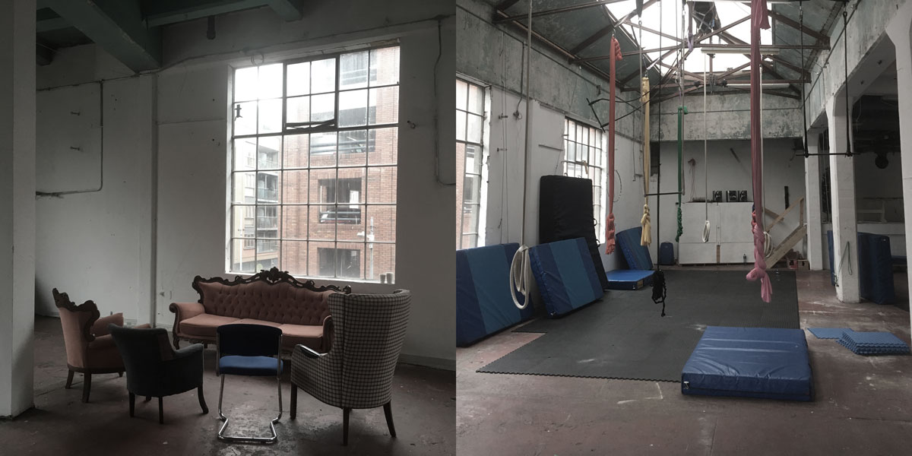
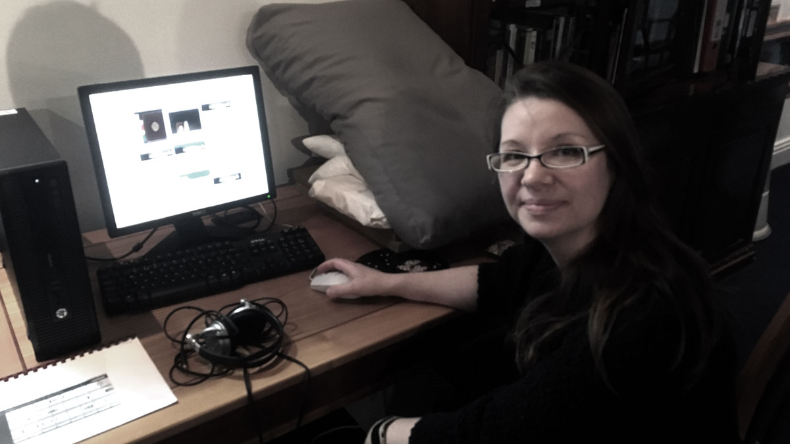
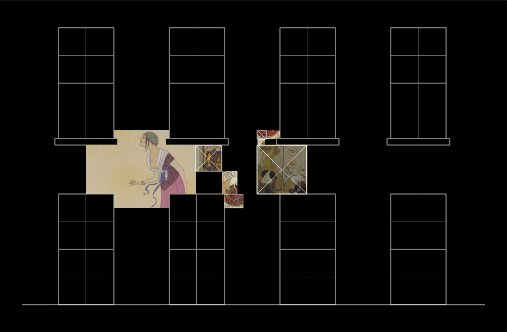
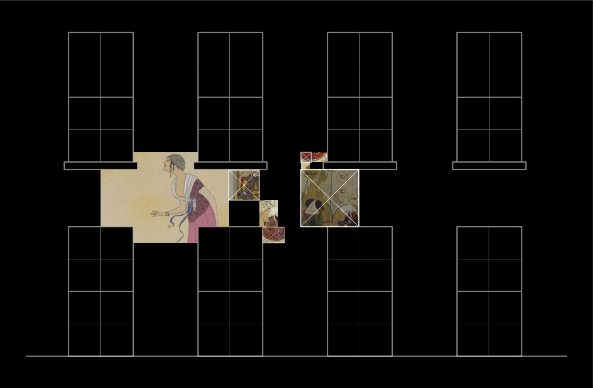

Tue, Dec 6, 2016
Even though I felt very confident regarding the fact that I took everything I need for the residency, I found out that i should not. The Ireland to Europe power adapters were missing. I realised that after I had the idea to charge my devices. Had to find them on my way to the library, which went surprisingly smooth. Nevertheless at the library I got my badge for accessing the hidden parts of the Chester Beatty Library. Then we had a review of the general residency plan with Jenny and Justyna.
Right after we went to the Chocolate Factory where we met Ross Williams from the Festival of Curiosity. Ross gave me access to the place and showed me the room with the desk allocated for me in case I feel the need to work late. Chocolate Factory is a multidisciplinary space where artists and designers can feel at home. It has an acrobatics room in the middle and a cafe on the ground floor.

Later, back at the Chester Beatty Library, I was introduced to Sinead Ward, the Digital Manager at the Chester Beatty Library. She showed me how to use Portfolio–the digital archive of the Chester Beatty Library artifacts. I will use the system to look for images that will serve as content for the projection mapping workshops and installation to be completed during the residency. Just after that I was at the IT office to discuss and test computer network related issues.

Mon, Dec 5, 2016
Leaving Berlin early in the morning to go to Dublin as today is the first official day of my residency. After a beautiful, cold and foggy night in Berlin, thick and crisp rime ice was covering objects left in the open. Morning sun casted long shadows and the white coated objects seemed twice as far away as they seem normally.
Jenny, Head of Education at the Chester Beatty Library, was waiting for me at the Dublin Airport. The flight got delayed and she had to wait for one extra hour. We were supposed to have a meeting with Jessica, Head of Collections & Conservation at the Chester Beatty Library, to outline the possible collaboration in terms of the content being used for the projection mapping installation part of the residency. We also met Justyna, Education Assistant at the Chester Beatty Library. Justyna and Jenny introduced me to other people working at the institution. In the photo from left: Justyna, Jessica and Justyna.
I was very happy to see the printed material regarding the projection mapping installation that will be visible at the atrium of the Chester Beatty Library from 16th to 18th December 2016. I hope that that this kind of digital approach will reveal new perspectives to the people involved in the life of the museum. Sometimes it is a matter of showing a working prototype and further ideas might go into unexpected directions. Curious.
Thu, Dec 1, 2016
Yesterday I made some sketches of the projection mapping installation in the atrium of the Chester Beatty Library. I am going to use six mini-projectors and six Raspberry Pi’s which will run a data-driven visual application. Images of the various artifacts of the Chester Beatty Library collection will be used to fill the database.
 

Mon, Nov 28, 2016
Good day. This is my first post regarding my residency at the Chester Beatty Library in Dublin, Ireland. The residency starts next week and there are still a lot of things to prepare for it. During the residency I will give several Projection Mapping with the Raspberry Pi workshops and build a projection mapping installation.
I am very excited about the upcoming workshop at the TOG hackerspace on 12 December 2016. It is going to be an introduction to the world of projection mapping through Raspberry Pi and open source software. Follow TOG to not miss detailed information about what time it is going to happen.
All in all I am very excited about the residency. I like the concept of the Maker in Residence programme which is also about opening museum spaces for makerspace and hackerspace activities.